本附录将简略阐述一些简单的数学细节，对那些希望加以利用的读者来说，它们能够阐明许多正文中没有给出的数学要点。（在正文中，各条是通过条目号来进行交叉指引的。）此附录要求读者精通代数方程，并熟悉基本微积分符号。
1.巴耳末公式
这里给出里德伯改写过的巴耳末公式。与原始公式相比，形式上稍有改变，但更有助益。如果vn是可见氢光谱中的第n条线的频率（n取整数值，3，4，……），那么这里c是光速，R是里德伯常数。以两项差的方式来表述此公式，最终被证明是一个聪明的举动（见下面的条目3）。其他系列谱线后来也被确定，其中第一项是1/12 、1/32 等。
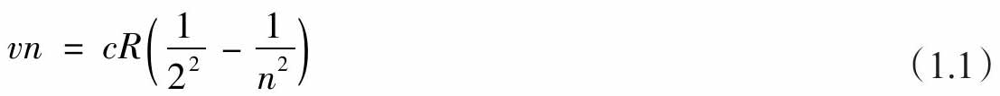
2.光电效应
根据普朗克的观点，每秒振动v次的电磁辐射，会发射能量为hv的量子，这里h是普朗克常数，它的值非常小，为6.63.10-34焦耳·秒。（如果将v用角频率ω=2πv替换，公式就会变为ħω，这里ħ=h/2π，也经常被称为普朗克常数，发音为“h拔”或“h杠”。）
爱因斯坦假定这些量子是永久存在的。如果辐射照在金属上，金属中的一个电子可以吸收一个量子，从而获得它的能量。对于电子，如果其逃出金属所需的能量为W，那么当hv＞W时，电子就会逃出金属，相反当hv＜W时，电子就不可能逃出金属。因此，存在一个频率（vo=W/h），当辐射频率低于该频率时，无论入射光的辐射有多强，都不会有电子被发射。当辐射频率高于该频率时，即使辐射相当弱，也会有一些电子被发射。
纯粹的辐射波理论将给出完全不同的行为。因为该理论预测，输送到电子的能量依赖于辐射的强度而不是它的频率。
实验观测到的光电发射性质，与粒子图像预言一致，而与波动图像预言不一致。
3.玻尔原子
玻尔假设氢原子由一个带电荷-e和质量m的电子绕一个带电荷e的质子转动。后者的质量足够大（是电子质量的1836倍），从而它的运动产生的影响可以忽略。如果圆周半径是r，电子速度是υ，那么使静电引力与离心加速度平衡，可以得出
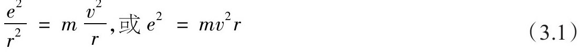
电子的能量是它的动能和静电势能之和，即
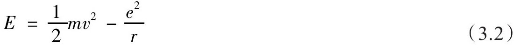
利用（3.1），其可以写成
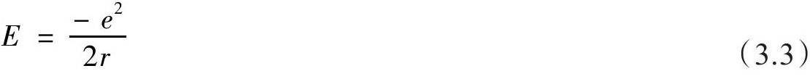
玻尔随后增加了一个新的量子条件，要求电子的角动量必须为普朗克常数h的整数倍，即
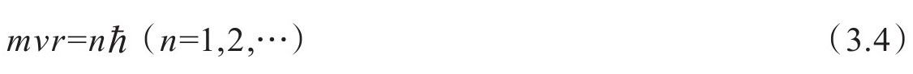
这样，相应的可能能量是
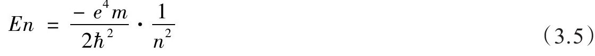
当一个电子从态n移动到态2时，所释放的能量以一个单光子的形式发射出去，该光子的频率将会是
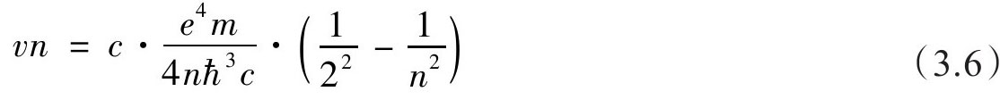
这就是巴耳末公式（1.1）。玻尔不仅解释了该公式，还使里德伯常数R可以用其他已知的物理常数来进行计算，即
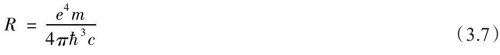
该数与实验上已知的值一致。玻尔的发现代表着新的量子思考方式的一个了不起的胜利。
[在正确的氢原子量子力学计算中，使用薛定谔方程（见条目6）时，离散能级以稍微不同的方式出现，与开弦谐振频率有某些类似性，并且数n与角动量的联系不再直接。]
4.非对易算符
一般来说，海森堡使用的矩阵相互间并不对易，但是最终量子理论要求做更进一步的概括，为此非对易的微分算符被添加到理论公式中。这个进展最终引导物理学家使用数学中的希尔伯特空间。
一般情况下，量子力学公式能够从经典物理学公式获得，需要做的仅是对位置x和动量p做如下替换：
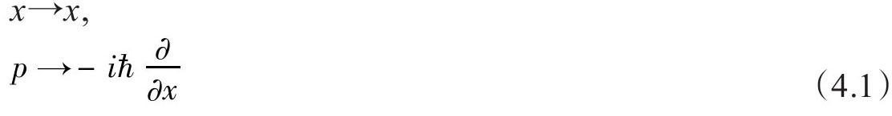
因为（4.1）中微分算符∂/∂x的出现，变量x和p不再相互对易，这与它们在经典物理中的对易性质相反。经典物理中，位置和动量仅是数，因此它们是对易的。当∂/∂x在左侧的时候，它会对右侧的x，以及任何其他右侧的对象进行微分，因此我们可以得到
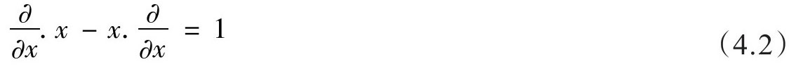
将对易括号定义为[р，x]=р.x-x.р，我们可以将上式重写为
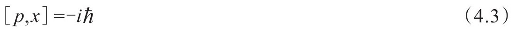
这个关系被称为量子化条件。细心的读者会注意到（4.3）方程的另一个解可以写成
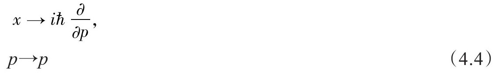
狄拉克特别强调，构造量子力学有多种等价方式。
5.德布罗意波
普朗克公式为
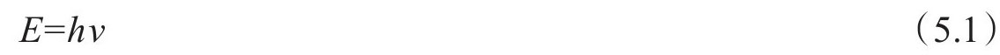
它使能量与单位时间间隔内振动的次数成正比。相对论理论把空间和时间、动量和能量看作自然的四重组合。因此，年轻的德布罗意提出在量子理论中，动量应该与单位空间内的振动次数成正比。这就产生公式
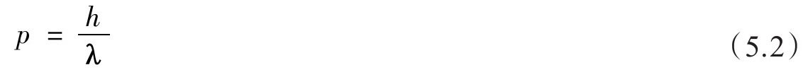
这里λ为波长。方程（5.1）和（5.2）一起给出了一个方法将粒子型性质（E和p）和波动型性质（v和λ）联系起来。波长为λ的波形的空间依赖，由下式给出
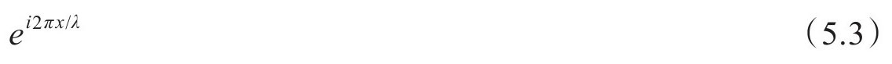
结合（4.1）和（5.3）便可以推出（5.2）。
6.薛定谔方程
一个粒子的能量是其动能
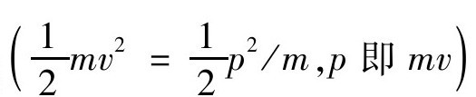
和势能[一般来说，可以写成x的函数V（x）]之和。类似于（4.1），能量和时间之间的量子力学关系为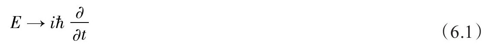
方程（6.1）和（4.1）中正负号不同是因为，对应于空间依赖性（5.3）并向右传播的波的时间依赖性为
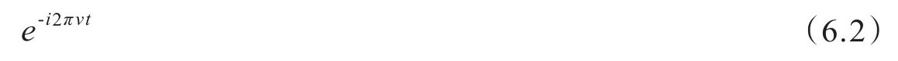
因此（6.1）中必须加上正号，才能给出E=hv。
利用（4.1）和（6.1），可以将E=1mv2 +V改写成量子力学波函数ψ的微分方程2
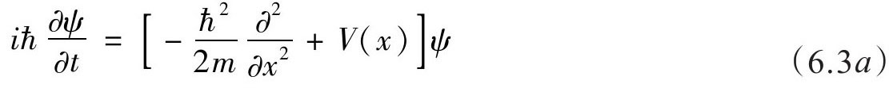
一维空间中即为
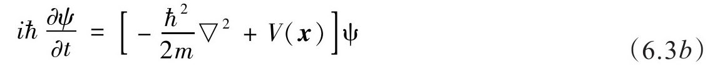
在矢量x=（x,y，z）的三维空间中，则为
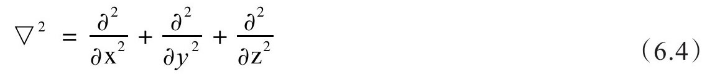
这些表述就是薛定谔方程。薛定谔第一次写出这些方程是建立在一个与此相当不同的讨论基础上的。方程（6.3）中方括号内的算符称为哈密顿量。
注意，方程（6.3）是ψ的线性方程，也就是说，如果ψ1和ψ2是方程（6.3）的两个解，那么
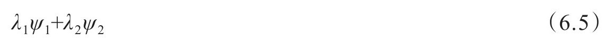
对于任何成对的数λ1和λ2来说也是方程（6.3）的解。
马克斯·玻恩强调，波函数可以解释为几率波。在点x处发现一个粒子的几率与相应（复）波函数的模平方成正比。
7.线性空间
条目6最后提到的线性性质是量子理论的基本特征，也是叠加原理的基础。狄拉克在波函数的基础上将该思想一般化，并在抽象的矢量空间上构建了量子理论。
一组矢量|ai ＞形成一个矢量空间，如果它们的任意组合
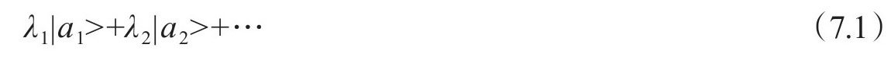
也属于该空间的话。这里λi是任意（复）数。狄拉克称这些矢量为“右矢”。它们是薛定谔波函数ψ的一般形式。还存在一个对偶空间“左矢”，它与右矢反线性相关：
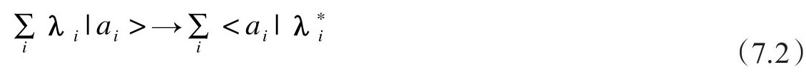
这里λ*i是λi的复共轭。（显然，左矢＜a|对应于复共轭波函数ψ*。）左右矢（形成一个括号 [2] ——狄拉克非常喜欢这个小小的玩笑）之间可以形成标量积。这对应于波函数的积分Sψ*1ψ2dx，可以记为＜a1 |a2 ＞，它有性质
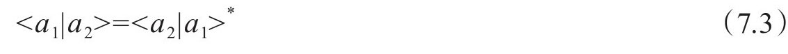
从（7.3）可以知道，＜a|a＞是一个实数。事实上，在量子理论中，还会强加一个条件要求它是非负的（它必须对应于|ψ|2）。物理状态和右矢之间的关系被称为射影表示 ，意思是，对于任意非零复数λ来说，|a＞和λ|a＞代表相同的物理状态。
8.本征矢量和本征值
矢量空间上的算符由它将右矢转变为其他右矢的效应来定义，即
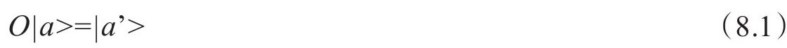
量子理论中，算符是可观测量在形式理论中的表示方式[请比较作用在波函数上的算符（4.1）]。有意义的表达式是以左矢——算符——右矢“三明治结构”出现的数（叫作“矩阵元”；它们与几率振幅有关）：
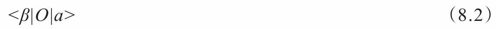
一个算符的厄米共轭O†由矩阵元间的关系来定义：
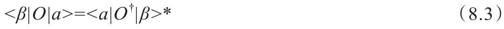
厄米共轭使其自身的算符有特殊意义：
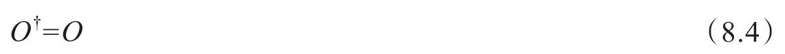
这样的算符叫作厄米算符 ，也只有这样的算符才能代表物理上的可观测量。
由于实际观测的结果总是实数，为了使该体系有物理意义，就必须存在一种方式来联系数和算符。这通过使用本征矢量 和本征值 的思想来建立。如果算符O使一个右矢|a＞变为它自身的一个倍数，
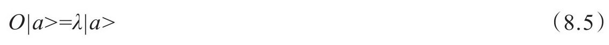
那么|a＞叫作算符O的本征矢量，对应的本征值为λ。可以证明，厄米算符的本征值总是实数。
对应于这些数学事实的物理解释是：观测量的实际本征值是测量该观测量获得的可能结果，相关的本征矢量对应于能确定（几率是1）获得该特定结果的物理态。只有算符相互对易的两个观测量才能被同时测量。
9.不确定关系
关于伽玛射线显微镜的讨论已经表明，量子测量会迫使观测者在精确的空间分辨率（短波长）和小的系统扰动（低频率）间进行取舍。用定量表达这个平衡将会引出海森堡不确定关系。从中可以发现，位置不确定度△x和动量不确定度△p之间的乘积△x.△p大小不能小于普朗克常数ħ的量级。
10.薛定谔和海森堡
如果H是哈密顿量（能量算符），薛定谔方程为
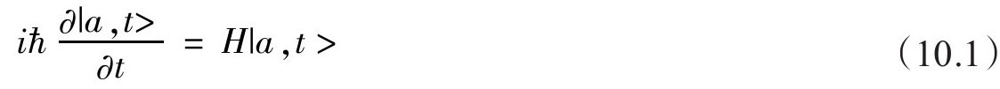
如果H没有明确的时间依赖（通常就是该情况），方程（10.1）的解可以在形式上写成
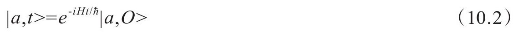
该理论的物理结果都源自形式为＜a|O|β＞的矩阵元性质。写出其明确的时间依赖行为（10.2），得到
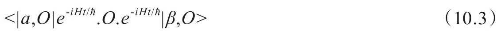
将上式中的项以不同的方式结合，得出
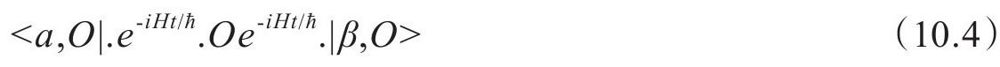
这里的时间依赖性，可以说已经被推向一个时间依赖的算符
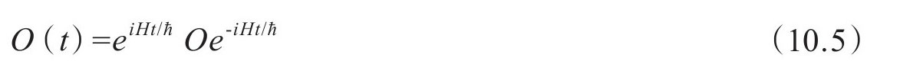
这样，方程（10.5）能够作为如下微分方程的解
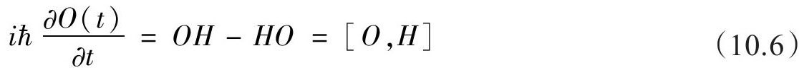
将时间依赖与算符观测量，而不是与状态相联系，这种量子理论的思考方式就是海森堡最初处理这个问题采用的方法。因此，本条目的讨论证明了量子理论的两个伟大创建者的方法是等价的，尽管他们最初处理问题的方式看起来是如此不同。
11.统计学
如果1和2是全同且不可区分的粒子，那么|1，2＞和|2，1＞必须对应于相同的物理状态。由于形式理论的射影表示特性（见条目7），这意味着
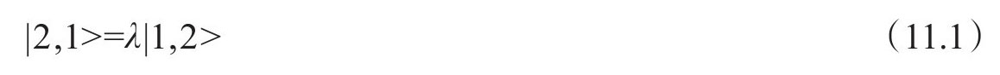
这里λ是数字。但是，交换1和2两次后，结果不会改变，所以它一定确实恢复到初始状态。因此，情况一定是
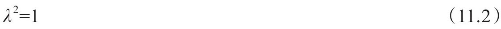
它有两种可能值：λ=+1（玻色统计），或λ=-1（费米统计）。
12.狄拉克方程
在威斯敏斯特教堂内保罗·狄拉克的墓碑上，刻着以下方程：
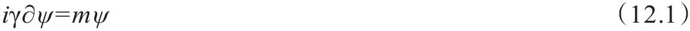
这就是他著名的电子相对论波动方程，以四维时空符号给出（使用量子理论中的自然单位，其使ħ=1）。[γ是4乘4的矩阵，ψ是所谓的四分量旋量[2（自旋）乘2（电子/正电子）状态]。在本书这样的导读性作品中，我们只能介绍这么多，但是不管在论文中、在书页上或在大教堂的石墓上，看到的人都应该有机会对这个物理学中最漂亮、最深刻的方程之一表达敬意。